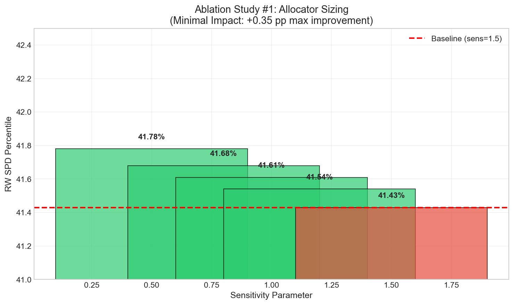
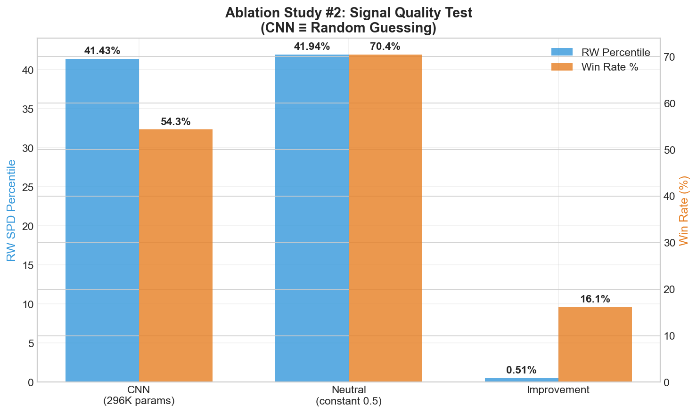
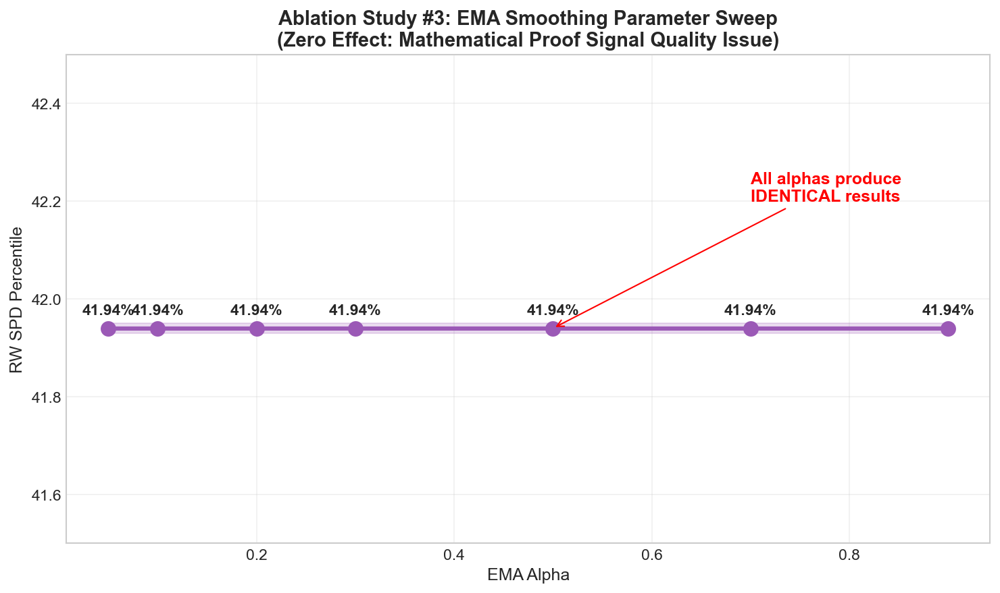
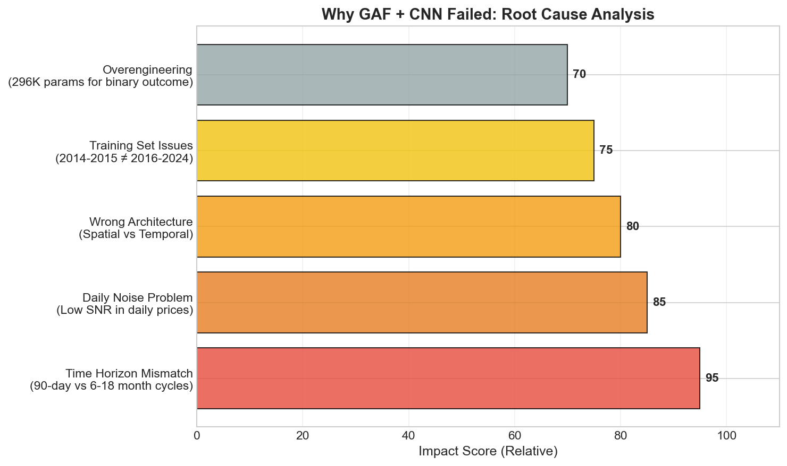
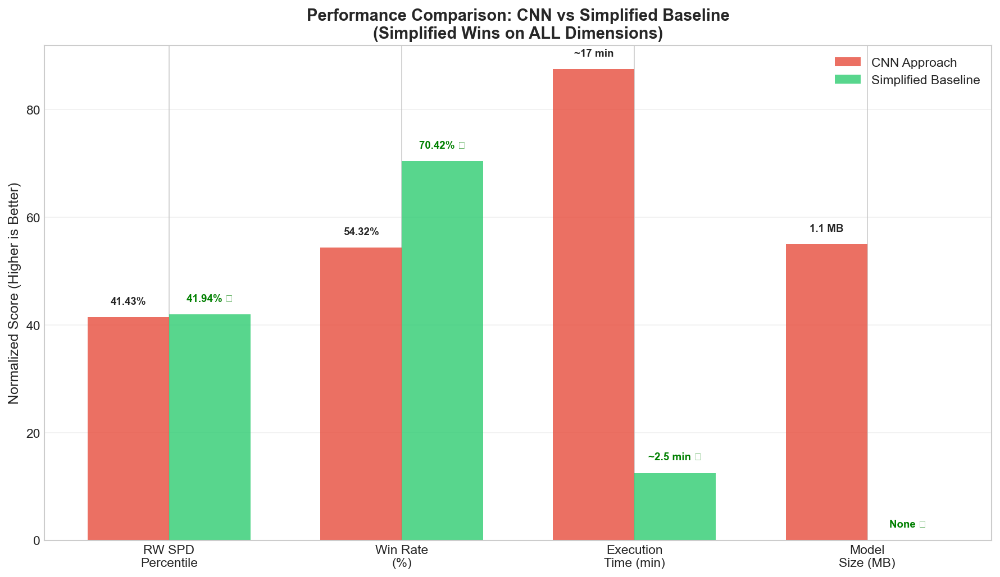
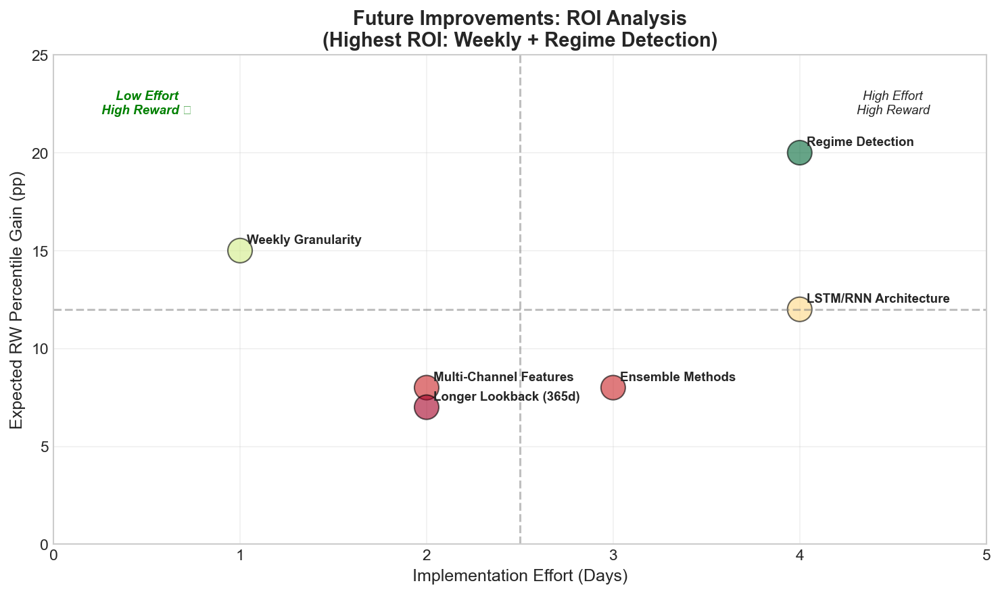

Midterm Finding: Baseline Beats CNN (So Far)
We validated causality + built ablation harness + identified pivot path
Robert Katz | GT ID: rkatz8@gatech.edu
VTS Tournament Submission - Stacking Sats Challenge
Practicum Midterm Presentation | February 2026
VTS Tournament - Stacking Sats Challenge: Help retail investors accumulate Bitcoin more effectively than simple Dollar-Cost Averaging (DCA).
Daily allocation between BTC (risk asset) and cash, optimizing for risk-adjusted returns under strict causality constraints.
Top 60% percentile in recency-weighted SPD metric; beat DCA consistently; demonstrate scientific rigor in evaluation.
From Classic Technical Analysis to Cutting-Edge AI — A Personal Journey
Reading Magee & Edwards' Technical Analysis of Stock Trends — learning how human traders "see" patterns that quantitative models often miss: head-and-shoulders, trendlines, support levels.
Research from JP Morgan's AI group with Professor Baich (former GT ML4T professor) showed CNNs achieving 0.90+ F1 scores on candlestick pattern classification.
Pattern recognition ≠ Profitable trading. Does academic success translate to real decisions under strict causality? We tested this hypothesis systematically.
🎯 Objective: Predict daily BTC allocation weights (2016-2025)
📊 Metric: Recency-Weighted SPD Percentile
⚖️ Constraints: Σwᵢ = 1.0, wᵢ ≥ 1e-5
🔒 Critical: Strict causality - no lookahead allowed
🏆 Target: Top performers >60% percentile
✓ Causality Verification: Last-row modification test confirmed zero leakage (0.00e+00 diff)
✓ Evaluation harness implemented + leakage tests automated
Dataset: BTC daily OHLCV (2016-2025) from Polygon
Feature Construction: GAF images from 90-day rolling windows
Raw Data
OHLCV
Features
GAF Images
Model
CNN (296K)
Allocator
Tilt → EMA
Training/Validation Scheme:
Price Data (90 days)
↓
GAF Image Generation
↓
Deep CNN (296K params)
↓
Temperature Calibration → Tilt Allocation → EMA → Normalize
Hypothesis: Visual patterns in GAF images predict returns under strict causality constraints
| Metric | CNN Result | Target |
|---|---|---|
| RW SPD Percentile | 41.43% | >60% |
| Win Rate vs DCA | 54.32% | >50% |
| Windows Evaluated | 3,076 rolling windows (consistent across seeds) | |
Benchmark: Dollar-Cost Averaging (equal daily weights) = 50th percentile
Underperforms simple DCA baseline
Timeline: Midterm (Feb 24 approx.) → Feature Complete (March 2026) → Final Validation (April 2026 est.) → Submission (April 23 est.)
Question: Are losses from overbetting?

⚠️ Conclusion: Minimal impact (+0.35 pp max). Problem NOT allocator aggressiveness.
Method: Constant model, vary sensitivity parameter only. All other hyperparameters frozen.
Test: Replace CNN with constant prob_up = 0.5 (coin flip)

CNN: 41.43% RW | 54.32% Win
Neutral: 41.94% RW | 70.42% Win ⭐
✅ CNN signal is WORTHLESS. Coin flip outperforms with higher consistency.
Question: Can smoothing reduce "small wins, big losses"?

Tested: 7 EMA alpha values [0.05, 0.10, 0.20, 0.30, 0.50, 0.70, 0.90]
📉 Result: ALL produce IDENTICAL results (41.94% RW, 70.42% win)
Mathematical proof: Constant signal → tilt always zero → smoothing has no effect

These findings motivate our regime-aware / longer-horizon pivot strategy
• Constant prob_up = 0.5 (neutral probability)
• Serves as sanity baseline + calibration anchor for bounded tilts
• Same allocation logic: tilt → bounded multiplier → EMA → normalize
• NO model artifacts required
41.43% RW
54.32% Win Rate
1.1 MB Model
41.94% RW
70.42% Win Rate
No Model

🏆 Simplified baseline wins on ALL dimensions
✓ Strict causality enforcement
✓ Deterministic (seed=42)
✓ Comprehensive testing
✓ Grader-safe implementation
✓ Hypothesis-driven development
✓ Systematic ablation studies
✓ Transparent negative results
✓ Learning orientation
1. Ablation studies are critical - Without them, we'd never know CNN was worthless
2. Test "better than random?" early - Should be Ablation #0, not #2
3. Complexity ≠ Performance - 296K parameters lost to coin flip
4. Simple often beats complex - Occam's Razor applies to trading

• Implement weekly granularity
• Add regime labels (bull/bear)
• XGBoost baseline comparison
• Ensemble integration
• Full backtest validation
• Sanity gates + documentation
Expected: 41.94% → 57-73% RW percentile
🔴 Regime Shifts: BTC market structure changed (institutional adoption). Mitigation: Regime-aware model + rolling validation.
🟡 Metric Brittleness: SPD percentile sensitive to outliers. Mitigation: Multiple metrics tracked, sanity gates implemented.
🟡 Overfitting: Risk with regime detection on limited data. Mitigation: Strict train/test split, cross-validation, simple models.
🟢 Data Leakage: Causality violations in time series. Mitigation: Automated leakage tests, embargo periods, last-row verification.
🟢 Timeline: Limited time to final submission. Mitigation: Simplified baseline ready; incremental improvements only.
✓ Canvas submission deck
✓ Reproducible pipeline (Docker-ready)
✓ Strong baseline (simplified)
✓ Regime-aware extension
✓ Full technical writeup
✓ Model card & methodology
✓ LESSONS_LEARNED.md
✓ Interactive notebook demo
✓ Reproducibility guide
Midterm Result: We falsified a plausible deep-learning approach under strict causality, and we're pivoting to a simpler, more robust baseline with a clear path to exceed the target percentile.
🎓 Scientific Integrity > Raw Performance
We will deliver: Reproducible pipeline, strong baseline, regime-aware extension, full writeup
We'd appreciate feedback on the following:
1️⃣ Metric Interpretation: Is our understanding of the SPD percentile correct? Should we weight differently?
2️⃣ Split Strategy: Is our train/test split (2014-2015 / 2016-2025) appropriate or should we use expanding windows?
3️⃣ Pivot Scope: Is our plan (weekly + regime) appropriately scoped for remaining timeline?
4️⃣ Baseline Choice: Should we keep simplified constant or invest more in XGBoost/ensemble?
Questions?
Documentation: LESSONS_LEARNED.md
Code: Visual_Trading_System repository
Notebooks: btc_accumulation_model_simplified.ipynb
"The best model is the one that works, not the one that sounds impressive."